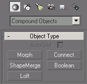

Panneau Créer/Geometry 
Le bouton Geometry du panneau Create donne accès aux fonctions de création 3D.
Une boite déroulante donne les trois choix suivants :
Standard Primitives
Compound Objects
Patch Grids
Standard Primitives comporte les volumes 3D basiques :
|
La boite (Box) La sphère (générée avec des pôles, méridiens et parallèles) (Sphere) Le cylindre (Cylinder) Le tore (Torus) ...Et la célèbre théière d'Utah, véritable icône des modeleurs 3D (Teapot) |
Le cône (Cone) La Géosphère (composée de triangles équilatéraux) (GeoSphere) Le tube (Tube) Le plan (plane) |
Ces formes sont complètement paramétrables.
Compound Objects propose des opérations très intéressantes pour faire de la modélisation avancée. Notamment ShapeMerge, Boolean et Loft.

Patch Grids permet de dessiner des carreaux de Bézier.